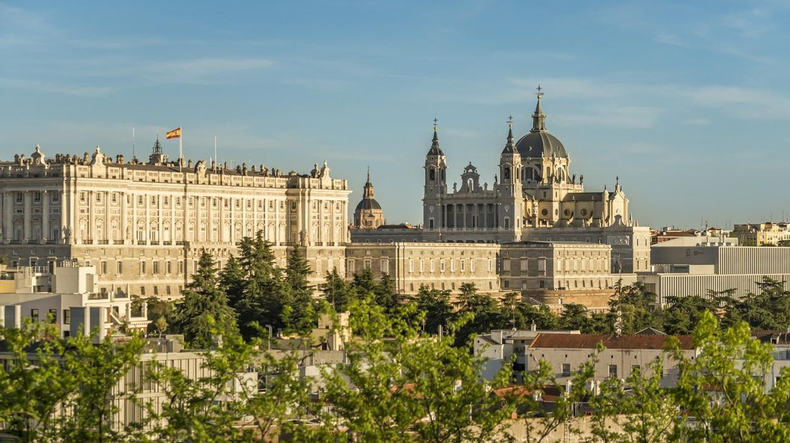
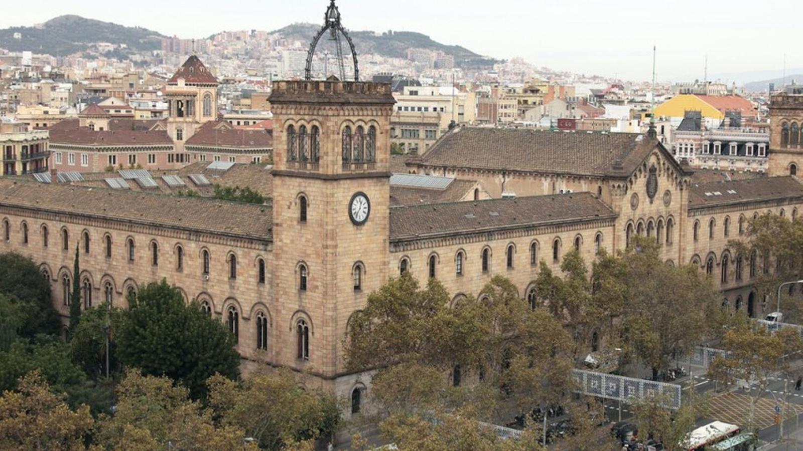
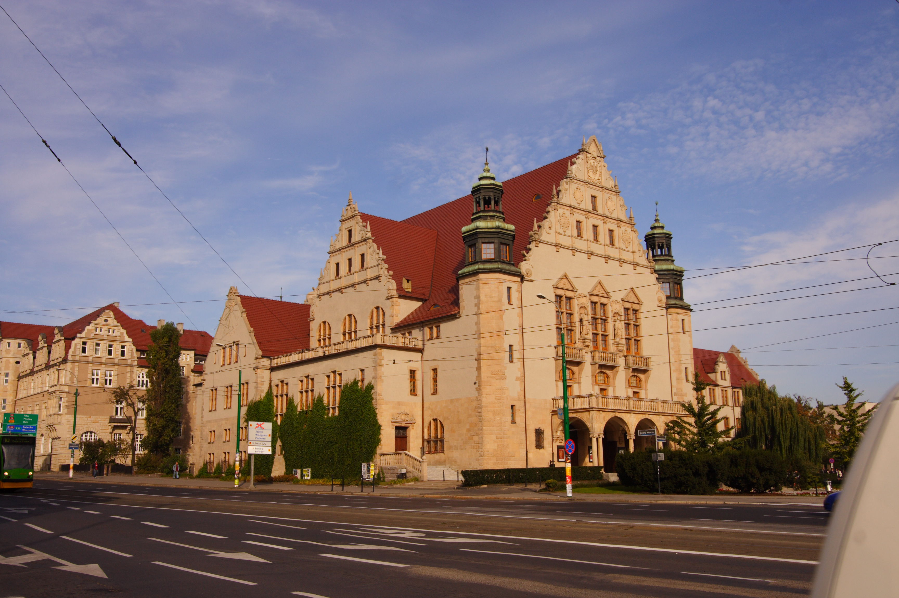
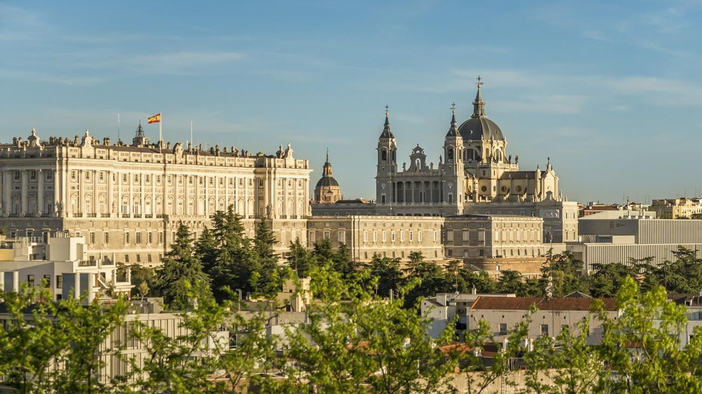
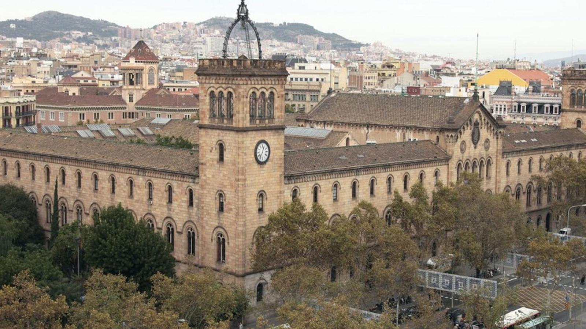
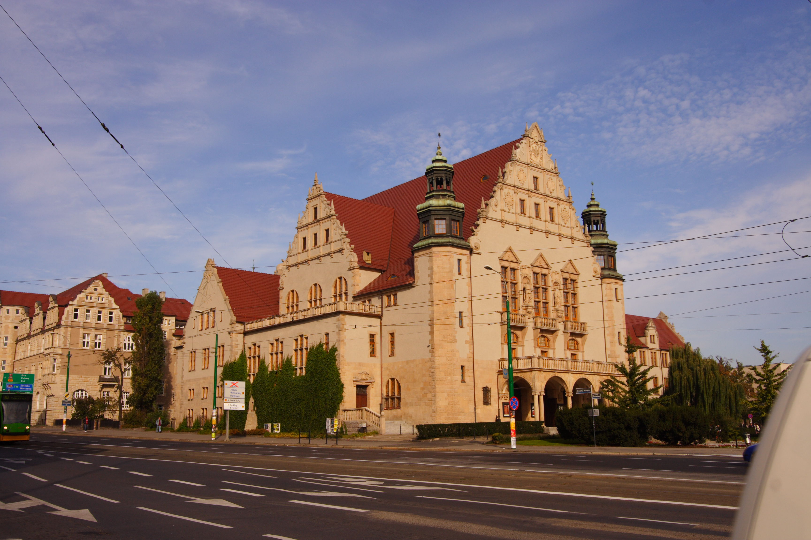

12 al 27 de septiembre de 2026
Misión
España-Polonia
Compartiendo culturas, estableciendo lazos, generando innovación
Una experiencia académica y profesional diseñada para ampliar tu visión, sumar experiencias sobre negocios, tecnología y cooperación internacional. Visitas y seminarios con instituciones clave, networking y un espacio para tejer vínculos que den lugar a futuras colaboraciones.